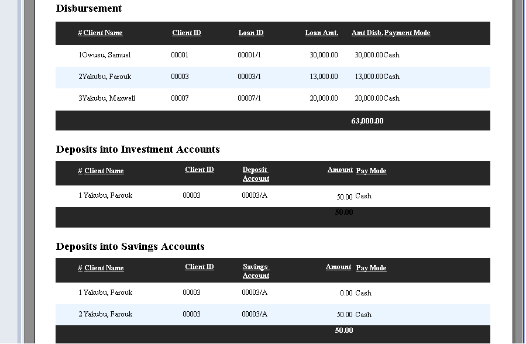

The Detailed Cashier Report basically consists of all transactions such as Loan Repayments,Disbursements,Deposits into various account types etc by the Cashier.
To be able to get the detailed report, you must select the duration which you want to view the report from,example from 1st April 2014 - 31st April 2014. After keying in this info,click on Get Report to access all transactions performed by the particular cashier as shown in the images below:

NB:To print out the report click on the printer icon indicated at the left corner of the main report indicated above.

Created with the Personal Edition of HelpNDoc: Easily create PDF Help documents